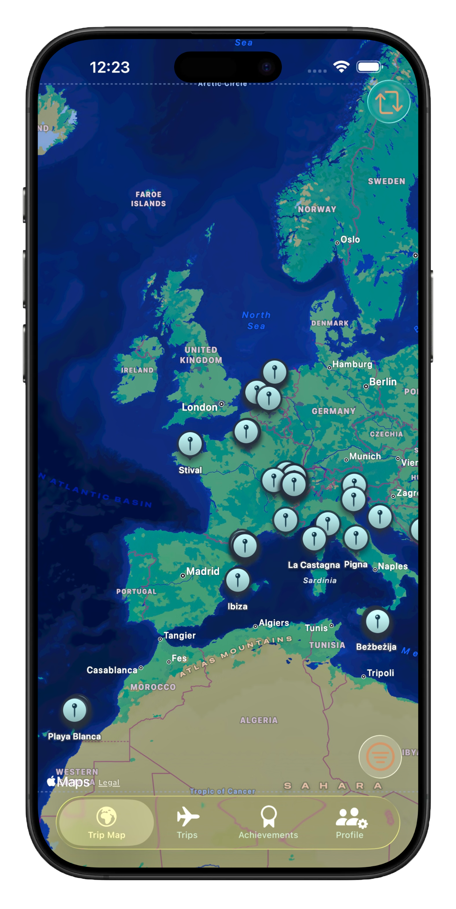
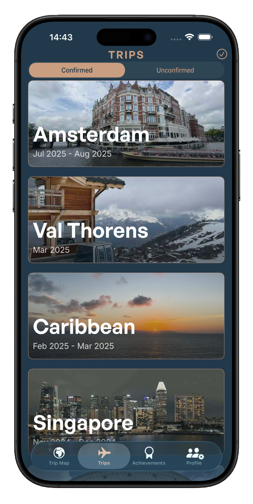
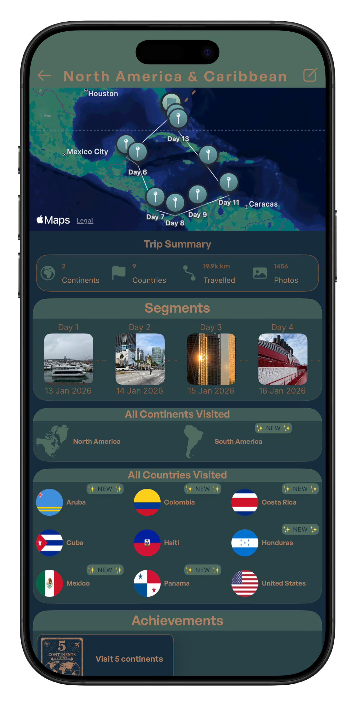
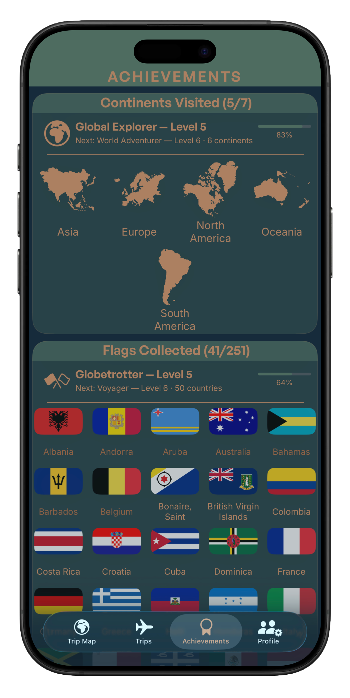
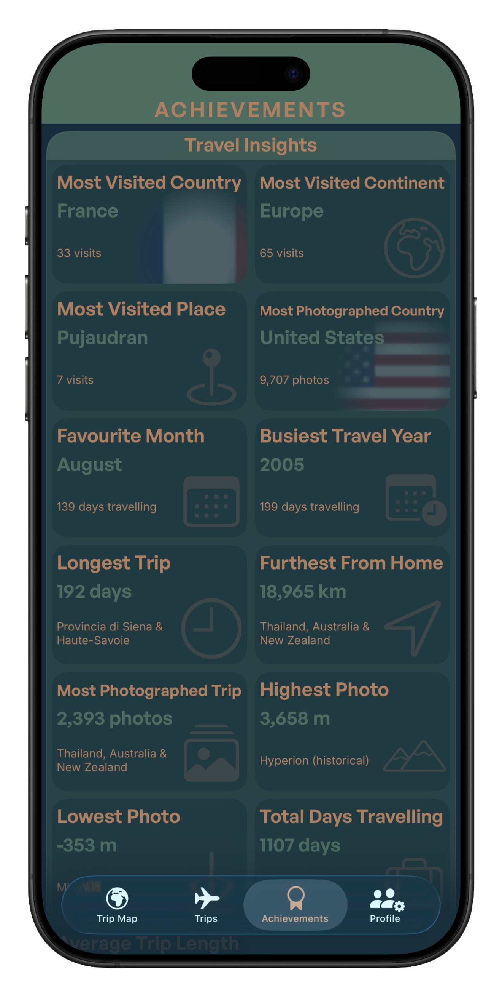

Relive the whole journey
Every stop.
Every chapter.
Open a trip and see the route you took, the places you visited, the photos you captured and what that journey added to your travel story.
Meet Tripix
Your photo library already holds the story of where you’ve been. Tripix brings it together — your journeys, places, milestones and memories, beautifully organised on your iPhone.

Your journeys, rediscovered
Tripix uses the dates and locations stored with your photos to turn years of memories into a travel history you can explore.
Every adventure in one place
From a long weekend to a once-in-a-lifetime journey, Tripix groups your photos into trips automatically and gives every adventure a home.




Relive the whole journey
Open a trip and see the route you took, the places you visited, the photos you captured and what that journey added to your travel story.
Collect the world
Watch your map grow into something more. Collect flags, track continents and unlock achievements as your travels take you further.
Your story in numbers
See the places you return to, your busiest years, longest adventures, most photographed destinations and the records hidden across your library.
A reason to come back
Tripix can bring a past adventure back to the surface on its anniversary — a small reason to revisit the moments you’d forgotten.
Tripix analyses the information it needs on your device. Your photos don’t need to be uploaded to Tripix just to understand where you’ve been.
Privacy, by design
Your photo library contains years of personal memories. Tripix is designed to analyse your travel history on your device rather than requiring those photos to be sent away just to organise your journeys.
Read the Privacy PolicyTripix for iPhone
Launching soon on the App Store.